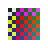
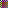

restore-transparent-rgb-padding-to-8x8 met unchanged explicit
Correct transparent-rgb-garbage.
transparent-rgb-garbage
Changed pixels: 0 (0.00%)
Time: 15.78ms
All images and settings






Metric comparison
| Metric | Target | Baseline | Current | Delta | Verdict |
|---|---|---|---|---|---|
| Output size | 8x8px | 8x8px | 8x8px | - | passed |
| meanRgbaError | - | 0 | 0 | 0 | metric unchanged |
| edgeF1 | - | 1 | 1 | 0 | metric unchanged |
| backgroundMaskIou | - | 1 | 1 | 0 | metric unchanged |
| smallComponentRetention | - | 1 | 1 | 0 | metric unchanged |
Regressed metrics: none
Target comparison
met
| Output size | 8x8px |
|---|---|
| Size matches | yes |
| Exact match | yes |
| Mean RGBA error | 0 |
| Edge F1 | 1 |
| Background mask IoU | 1 |
| Small component retention | 1 |
WARNING details
WARNING presentation: none
none
Auto candidate diagnostic
- Candidate list
- would-not-show
- Decision reason
NO_WARNINGNO_WARNING- Classification confidence
- 0.6667
- Grid confidence
- 0.4587
- Candidate plans
- 6
Candidate options
No candidate option was generated
Options
- Input kind
- scaled-pixel-art
- Route
- refine
- Grid confidence
- 0.4587
- Top candidates
[{"width":24,"height":24,"score":0.7393623405319709,"confidence":0.6393895310936965},{"width":12,"height":12,"score":0.6301828769253867,"confidence":0.4586866056572742},{"width":6,"height":6,"score":0.5925275965497262,"confidence":0.41476931758480834}]- Metrics
{"outputWidth":8,"outputHeight":8,"sizeCorrect":true,"top3SizeCorrect":true,"gridPhaseError":0,"meanRgbaError":0,"edgeF1":1,"backgroundMaskIou":1,"smallComponentRetention":1,"byteIdentical":true,"catastrophicFailure":false,"runtimeMs":15.784984999998414,"approxPeakBytes":9728}- Options
{"bgExtractionMethod":"top-left","processingMode":"auto","cellSamplingMode":"legacy-median","autoGridFromTrimmed":false,"backgroundMask":true,"backgroundMaskTolerance":0,"sampleWindow":1,"preRemoveBackground":false,"postRemoveBackground":false,"bgRemovalScope":"off","trimToContent":true}